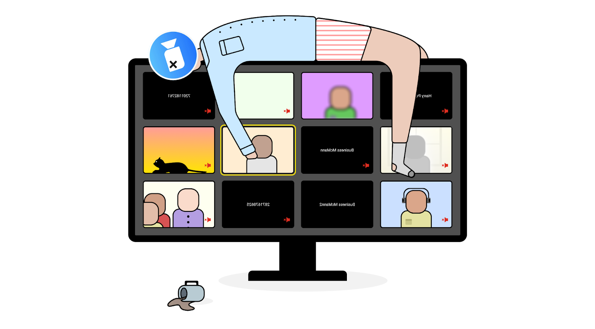
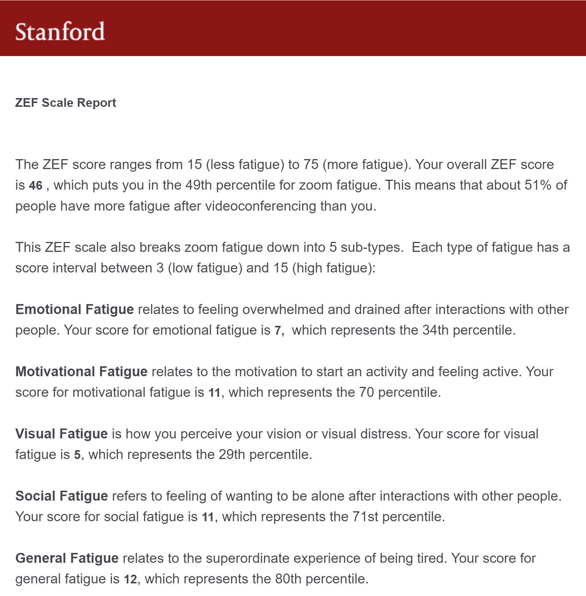

Zoom Go
A mixed reality Zoom mobile app aimed to reduce Zoom fatigue by encouraging students to walk to class.
A mixed reality Zoom mobile app aimed to reduce Zoom fatigue by encouraging students to walk to class.
“Zoom fatigue describes the tiredness, worry, or burnout associated with overusing virtual platforms of communication”

What causes Zoom fatigue and what design changes can we make to
reduce fatigue for university students?
Zoom fatigue can cause negative physical effects such as:
As well as negative mental effects such as:
Myself and everyone else I know has experienced some form of Zoom fatigue so I was curious to see how much Zoom fatigue I have compared to others. I took a survey created by Stanford University to find out my Zoom Exhaustion and Fatigue score and discovered about 51% of people have higher Zoom fatigue than I do.

Researchers from Stanford also found four main reasons as to why people experience Zoom fatigue:
I interviewed five University of Washington students to ask them about their Zoom usage and their thoughts on the Zoom interface. The participants had all spent 10-15 hours on Zoom every week, have had 2+ hour long lectures, and experienced some form of Zoom fatigue. The most surprising results I found were:
Then I compiled a list of pros/cons of Zoom classes that were frequently mentioned by my interviewees
Initially, I had three approaches to address reducing Zoom fatigue. These ideas were mainly aimed at tackling two of the reasons that cause Zoom fatigue in reduced mobility and high cognitive load.
Description: Additional Zoom feature where users can enter a Zoom waiting
room before the meeting starts to chat with peers.
Inspiration: Club Penguin and Among Us
Benefits: Simulates the experience of an in-person class more than the current version of Zoom
Challenges: Had not thought about how the design would work for larger classes
Description: Zoom bot that can be invited to a Zoom meeting.
Helps lead class breaks.
Inspiration: Discord
Benefits: Promotes breaks in-between meetings
Challenges: After user validation,
I discovered most people want to spend time away from a screen when they are on a break
.png)
Description: Simulate walking to class in order
to promote physically taking a break
Inspiration: Pokemon Go and Google Maps
Benefits: Promotes physical activity, gamification may increase motivation
Challenges: Designed specifically for UW campus,
user validation showed some students prefer not walking to class
Randomly spawn somewhere on the UW campus. Then, click the walk button and a pop-up will display how far you need to walk to go to your next virtual class. Click start to begin and the app will display a path to class which also serves as a progression bar, filling up as you walk. Once the path is entirely filled, click the building corresponding to your next class to join the meeting
I learned that it can be difficult to re-invent the wheel when it comes to designs. Sticking with Zoom's color palette helped my final screens look consistent with the company's design so I felt proud of the UI. One difficulty I had was getting Zoom's typography so I used a similar font. Another difficulty I had was adjusting the size of my screens so I will be sure to incorporate responsive design from the start. While my design may not reduce Zoom fatigue for everyone, I think it would do a good job for those willing to give this mixed reality type app a shot.